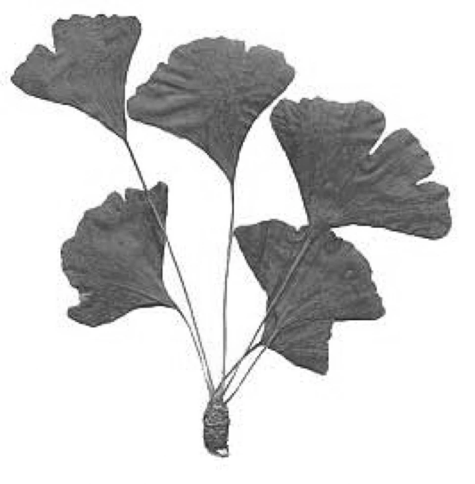

Alter
ALLGEMEIN: Die Bevölkerung der modernen Industriestaaten weist durch medizinischen Fortschritt, bessere Hygiene und Ernährung eine stetig steigende Lebenserwartung (Frauen 83,3- Männer 78,5 Jahre/Quelle: Statistisches Bundesamt) auf, verbunden mit der Hoffnung, bis ins hohe Alter hinein gesund, selbständig und sozial eingebunden zu sein. Ich will ihm als Lebenszeit geben hundertundzwanzig Jahre legte Gott das Lebensalter des Menschen nach dem ersten Buch Mose 6.1 fest. Alter ist ein natürlicher biologischer Prozess, der in den Erbanlagen festgelegt ist und zu jedem gesunden Leben dazugehört. Genetisch vorgegeben sind zwar gewisse Anfälligkeiten für bestimmte Krankheiten und auch die zu erwartende Lebenspanne, doch jeder hat es in der Hand, durch gesunde Lebensweise und richtige Ernährung diese Spanne zu verlängern und voll auszukosten. All unser Tun soll auf ein langes Leben ausgerichtet sein. (Paracelsus 1493-1541). Mit 40 beginnt das Altsein der Jungen, mit 50 das Jungsein der Alten, sagt ein Sprichwort.
Alt werden will Jeder, älter werden Niemand
Ich werde nicht gern alt, aber es ist die einzige Möglichkeit länger zu leben.
Das Alter bringt graue Haare und Falten, aber auch viel Gutes: So z.B. Weisheit, Gelassenheit, Enkel und Seniorenermäßigungen. Endlich findet man Zeit und Ruhe, sich um die Familie, Freunde und Hobbys zu kümmern. Wir können verreisen, ferne Länder sehen, schreiben, Sprachkurse oder auch - wie heute, ein Buch über Naturheilkunde lesen. Wer viel liest, lebt im Durchschnitt 2 Jahre länger (Yale Uni.). Wir können alles tun, was uns Spaß und Freude macht. Menschen, die das Alter insgesamt als gute Sache betrachten, leben im Schnitt länger als solche, die damit nur Siechtum und Krankheiten verbinden. Außerdem bleiben Senioren mit einer positiven Einstellung länger gesund und aktiv. Alt sein - ohne alt zu sein. Eine positive Einstellung hilft uns, fit und gesund zu bleiben:
Wenn die Kraft nachlässt, körperlich und geistig
Studien belegen, dass der Eintritt in die Rente einer der Top-Ten Stressoren ist. Erst jetzt zeigen sich lange vernachlässigte Krankheiten. Aber das Alter bringt auch Einschränkungen mit sich, die körperliche Belastbarkeit nimmt ab und nicht selten auch die geistige Leistungskraft. Wir müssen daher alles tun, um geistig und körperlich fit zu bleiben, denn: Alt machen nicht die Jahre und nicht die grauen Haare, alt ist, wer den Mut verliert und sich für nichts mehr interessiert.
Alter ist keine Krankheit, aber der Körper verändert sich:
„Anti-Aging“ also das „Nicht-Altern“ gibt es nicht. Tatsache ist und bleibt, dass unser Körper von Geburt an altert.
- Das Leistungsvermögen nimmt ab: Man kommt schneller aus der Puste, hier und da macht sich ein Zipperlein bemerkbar, ein Tagespensum, das man früher mit Leichtigkeit bewältigt hat, muss manchmal auf 2 Tage verteilt werden.
- Die Muskelmasse, -stärke und -funktion (Sarkopenie) nimmt um ca. 1/3 ab, Körperfett erhöht sich entsprechend, das Gesamtgewicht aber bleibt.
- Der Energie-Umsatz sinkt um ca. 1/3. Wer weiter die gleiche Menge isst wie bisher, nimmt zu.
- Die Knochen verlieren Festigkeit, es kommt besonders bei Frauen zu Osteoporose. Mit zunehmendem Alter leiden wir alle unter einem Kieselsäuremangel. Silicium ist jedoch für die Bildung der im Knorpel vorhandenen Kollagenfasern notwendig (Braunhirsemehl/Wildform 2 x täglich 2 Esslöffel essen).
- Ältere Menschen neigen oft zu einem Rundrücken. Er verkürzt die Muskeln im Brustbereich und wirkt sich negativ auf die Atmung aus.
- Der Wassergehalt sinkt im Körper um ca. 20 %, die Elastizität der Bandscheiben nimmt ab, wir werden kleiner; faltiger, die Haut wird dünner. Argan-Öl wirkt dem entgegen.
- Die Durchblutung der Muskeln, insbesondere auch des Herzmuskels und des Gehirns, wird langsam schlechter. Konzentrationsstörungen und nachlassende Gedächtnisleistung sind oft die Folge.
- Innere Organe, wie Lunge, Niere, arbeiten langsamer. Die Nierenkapazität nimmt etwa ab einem Alter von 30 Jahren ab. Sie verliert pro Lebensjahr ca. 1 % ihrer Fähigkeit, Säure auszuscheiden.
- Verdauungsprobleme durch mangelnde Bewegung, zu wenig Flüssigkeit und schlecht gekaute Speisen.
- Der Fettstoffwechsel erlahmt, gespeichertes Fett wird schlechter abgebaut.
- Das Immunsystem wird schwächer, dadurch werden wir empfänglicher für bakterielle/viruelle Krankheitserreger. Ein Grund dafür sind Veränderungen in der Magenschleimhaut. Viele Erreger werden durch deren Säure abgetötet. Doch das funktioniert bei vielen älteren Menschen nicht mehr so gut, weil bei ihnen der pH-Wert im Magen zu hoch ist. Die Folge: „Viele Keime gehen vom Magen in den Darm weiter“, siehe Sodbrennen.
- Chronisch, stille Entzündungen.
- Das Geruchs- und Geschmacksempfinden lässt nach, süß und salzig werden nicht mehr so intensiv wahrgenommen.
- Das Durstgefühl wird weniger.
- Hören und Sehen lässt nach.
- Magensäuremangel. Mit 60 Jahren liegt die Produktion oft nur noch bei 20-30 % des ursprünglichen Wertes, so dass in diesem Alter fast jeder Mensch unter Magensäuremangel leidet (siehe Sodbrennen).
- Flächenhafte bis 3 cm große Hautblutungen, sogenannte Sugillationen treten insbesondere bei Gerinnungsstörungen im Blut auf, (Arzt befragen).
Das Alter hat 2 große Vorteile: Die Zähne tun nicht mehr weh und man hört nicht mehr all das dumme Zeug, das ringsum gesagt wird. (G.B. Shaw)
Glücklicherweise ist man diesen Alterungsprozessen nicht machtlos ausgeliefert. Die Naturheilkunde bietet Behandlungsmöglichkeiten und Medikamente, die ein Nachlassen der körperlichen und geistigen Fähigkeiten verhindern oder verzögern können. Oft ist schon viel gewonnen, wenn wir die ständige Konzentration auf Probleme einfach weglassen.
Wer alt werden will, muss früh anfangen, jung zu bleiben
Aber auch die beste Therapie hilft nur wenig, wenn wir passiv bleiben. Je älter man wird, umso besorgter muss man mit seiner Gesundheit umgehen. Gegen das Älterwerden selbst kann man leider nichts tun. Man kann nur versuchen, möglichst lange gesund und fit zu bleiben. Tun Sie etwas für sich und werden Sie selbst aktiv.
Das Alter ist wie eine Woge im Meer. Wer sich von ihr tragen lässt, treibt obenauf. Wer sich dagegen aufbäumt, geht unter. (Gertrud von Le Fort)
Es kommt nicht nur darauf an, dem Leben mehr Jahre, sondern den Jahren auch mehr Leben zu geben. Unterstützen Sie Ihren Körper gegen vorzeitige Altersbeschwerden durch:
Gesunde Ernährung
Um ein möglichst hohes Alter in Gesundheit zu erreichen, bedarf es einer kargen Ernährung, Muße, Sport, der täglichen Beschäftigung, vor allem aber Maßhalten in allen Dingen des Lebens. (Hippokrates, 4. Jahrhundert vor Christus) Eure Nahrung sei einfach und knapp. (Sebastian Kneipp)
Kaloriensparen verlängert nicht nur das Leben, sondern hält auch den Geist im Alter auf Trab. Auf das richtige Maß kommt es an, um ein hohes und gesundes Alter zu erreichen. Untersuchungen an hochbetagten, gesunden Menschen haben ergeben, dass sie zeitlebens sehr abwechslungsreich und maßvoll gegessen haben. Wer sein Leben verlängern will, muss seine Mahlzeiten verkürzen. (Benjamin Franklin)
50plus-Kost: Weniger Kalorien, aber genauso viele Nährstoffe. Nicht einseitige Ernährung oder die Einhaltung einer Diät hat sie so alt werden lassen, sondern das Beachten der Erkenntnis:
Ich darf alles essen, aber alles in Maßen.
Halten Sie Ihren Körper fit, indem Sie sich gesund und ausgewogen ernähren. Altersforscher sind sich einig: Eine spezielle Diät brauchen ältere Menschen nicht einzuhalten. Obwohl der Kalorienverbrauch um ca. 1/3 zurückgeht, bleibt jedoch der Bedarf an Eiweiß, Vitaminen und Mineralstoffen gleich, so dass wohl weniger, dafür aber vollwertiger gegessen werden soll. Auch in unserem Land gibt es ältere Menschen, insbesondere Altenheimbewohner, die unterernährt sind oder an Austrocknung leiden.
Öfter, aber weniger essen
Wenn sich ältere Menschen müde, schlapp und appetitlos fühlen, muss nicht immer eine ernste Erkrankung dahinter stecken. Viele alte Menschen - besonders allein lebende Männer - ernähren sich im Alter nicht mehr richtig. Ihnen fehlt die Gesellschaft, um mit Appetit zu essen. Außerdem können sie manche Speisen nicht mehr richtig kauen oder nicht mehr gut vertragen. Die Folge ist eine Unterernährung, bei der vor allem Vitamine, insbesondere Vitamin B, Cholin fehlt. Je älter wir werden, desto mehr brauchen wir davon. Sie essen zu oft Fleisch und Wurst und zu selten Fisch, Obst/Gemüse und so gut wie keine Vollkornprodukte (Kaubeschwerden). Sie entwickeln sich daher zu regelrechten „Puddingvegetariern“.
Nährstoffe gegen das Altern
Wissenschaftler sind der Überzeugung, dass Antioxidantien (Vitamin A, C, E) sogenannte freie Radikale (aggressive Stoffwechselrückstände) einfangen, die ansonsten Krankheiten/Schäden des Älterwerdens verursachen/verstärken.
VITAMINE
| Nahrungsmittel /Quelle | Mangel/Erkrankung | |
| Vitamin A | rote und gelbe Gemüse, Kohl, Brokkoli, Aprikosen, Mangos, Leber | Arteriosklerose, Arthritis, Krebs, Grauer Star |
| Vitamin B | mageres Fleisch, Fisch, Eier, Bananen | Haut, Nerven, Gehirn |
| Vitamin C | Kartoffeln, rote Paprika, Kiwis, Orangen, Kohl, Obst, Gemüse | Krebs, Immunschwäche, Hypertonie |
| Vitamin D | Fisch, Eier, Leber, Champignon | Osteoporose |
| Vitamin E | Weizenkeime, Sonnenblumen-kerne, Avocado, Fenchel, Grünkohl, Mandeln | Krebs, Herzinfarkt, Augenerkrankung, Immunschwäche |
Anmerkung: Nach Professor Linus Pauling (Nobelpreisträger und Professor Gershorn/Uni Haifa) bleibt der Mensch 20 Jahre biologisch jünger, wenn er obige Vitamine täglich verzehrt, auf Rauchen ganz verzichtet und Zucker reduziert. Die derzeitige Beweislage bestätigt eindeutig, dass eine gute Vitamin-D-Versorgung bei älteren Menschen das Risiko für Stürze, Kraftverlust, Mobilitäts- und Gleichgewichtseinbußen sowie vorzeitigen Tod senken kann.
M I N E R A L S T O F F E
| Nahrungsmittel/Quelle | Mangel/Erkrankung | |
| Kalzium | Milchprodukte, insbesondere fettarmer Joghurt, Hartkäse, Sesam | Entkalkung der Knochen, Osteoporose |
| Eisen | Grünblättriges Gemüse, Aprikosen, Bierhefe, Rote Bete, Sesam, Hirse, Leber | chronische Entzündungen, trockene Haut/Falten, Erschöpfung |
Mittelmeer Diät macht Spanier und Italiener zu den gesündesten Menschen mit einer hohen Lebenserwartung. Tatsächlich essen sie mehr Gemüse Obst und Hülsenfrüchte als wir. Aber nicht nur das Essen ist wichtig, Sonne, Siesta, Spaziergänge, Sprechen, soziale Kontakte pflegen, Spaß am Leben haben – das sind vielleicht die besten Zutaten. Jung bleiben mit Spermidin. Spermidin ist eine endogene, natürliche Substanz. Es wurde erstmals in der männlichen Samenflüssigkeit entdeckt, was der Substanz ihrenNamen gab. Inzwischen ist bekannt, dass Spermidin in allen Körperzellen existiert und bestimmte Darmbakterien in der Lage sind, diesen Stoff zu bilden. Der Hauptanteil muss jedoch über die Nahrung aufgenommen werden. Viel Spermidin ist enthalten in: Weizenkeimen (z.B. Dr. Grandel Vollgran Weizenkeimen), Nüssen, Pilzen, Bananen, Avocados, aber auch in Brokkoli, Kartoffeln, Blumenkohl, Knollensellerie, Sojabohnen etc.
ERNÄHRUNG: Rotes Obst, Gemüse, Salat. Täglich etwas Frisches (1 Möhre/Tomate) essen bzw. Nahrungsmittel, die reichlich Antioxidantien (Vitamin A, C, E) enthalten. Milchprodukte wie: fettarmer Joghurt, Hartkäse. Gereifte Käsesorten, wie zum Beispiel Cheddar, Brie oder Parmesan beugen Demenz vor und verlängern das Leben. Kefir (Kalzium). Vollkornprodukte: (Ballaststoffe) Weizenkleie ist nur sinnvoll, wenn auch 1-2 Glas Wasser getrunken werden, ansonsten wirkt sie stopfend. Süßkartoffeln. Wissenschaftliche Studien haben ergeben, dass die Volksgruppe der Hunzas im nordwestlichen Karakorum (Pakistan) ihre auffallende Langlebigkeit dem reichlichen Verzehr von Aprikosen verdanken, eine Obstsorte die besonders viel Carotin enthält. Die Gesellschaft für grundlegende und angewandte Ernährungswissenschaft in Spanien empfiehlt, jeden Tag sieben Oliven oder fünf Esslöffel Olivenöl zu essen. Schwarze enthalten mehr der gesunden Inhaltsstoffe als grüne – sie hatten mehr Zeit am Baum zu reifen. Sie enthalten einfach ungesättigte Fettsäuren, Antioxidantien, Phosphat, Eisen, Natrium, Magnesium und Zink. Länger leben mit Walnüssen (Professor Gary Fraser, Loma Linda Universität Kalifornien). Wer mindestens fünf mal in der Woche je drei Walnüsse knabbert, lebt durchschnittlich sieben Jahre länger. Walnüsse haben eine spezielle Fettsäuremischung, die Herz- und Blutgefäße weitgehend vor Cholesterinschäden bewahrt. Salzreiche Kost. Senioren leiden oft an Natriummangel (unter 4 g/Tag) Anzeichen dafür sind: Müdigkeit, Konzentrationsschwierigkeiten, Reizbarkeit und Muskelschwäche. Zu viel des Guten ist hier allerdings auch für Senioren nicht gut, (über 6 g/Tag). Viel Omega-3-FS (siehe Öle/Fette) essen. Sojapräparate, Knoblauch/Bärlauch. Sie schützen uns vor Alterungsprozessen.
Nachgedacht
Wenn ich gewusst hätte, wie viel Spaß Enkel machen, hätte ich sie zuerst bekommen ...
7 Nahrungsmittel-Diät
| Sie wurde von australischen Ernährungswissenschaftlern entwickelt, die Blutdruck und Cholesterinspiegel senken soll, mit dem Effekt: Das Herzinfarktrisiko sinkt um 78 %. Die Lebenserwartung steigt: Bei Frauen um 4,8 Jahre, bei Männern sogar um 6 Jahre. Diese 7 Lebensmittel sollten Sie danach bevorzugt essen: | |
| pro Tag: | Obst und Gemüse je 400 g, süße Mandeln (68 g), Knoblauch (2,7 g), Bitterschokolade (100 g), Rotwein (150 ml). |
| pro Woche: | Kaltwasserfische 4 x je 114 g (siehe Öle/Fette). Ferner Olivenöl, Sojabohnen (Tofu), Tomaten, Nüsse, Haferflocken, Kichererbsen, Tee. |
Reduzieren Sie sogenannte Altersbeschleuniger
MEIDEN: Wie gesund wir im Alter sind, haben wir selbst in der Hand.
- Übersäuerung der Körperzellen (siehe Entsäuerung).
- Fett erzeugt Fett, verursacht Säure, Arteriosklerose. Bevorzugen Sie mageres Fleisch/Wurst. Alkohol, Nikotin schwächen Herz-Kreislauf, fördern zahlreiche Erkrankungen. Wer täglich eine Packung Zigaretten raucht und das über 40 Jahre, stirbt etwa 7,8 Jahre früher, als ein Nichtraucher (Britische Untersuchung).
- Zucker, alle Süßigkeiten verursachen Säure im Körper, sowie Erkrankungen, die mit einer Entzündung einhergehen, sogenannte itis-Erkrankungen, z.B. Bronchitis, Gastritis, Hepatitis, Arthritis, Sodbrennen etc.
- Salz ist lebensnotwendig. Zu viel Salz über 6g/Tag bindet Wasser im Körper und entzieht den Knochen Kalzium mit der Folge: Hypertonie, Osteoporose, Schlaganfall, offene Beine. Lieber mit Kräutern und Gewürzen kräftig abschmecken. Zu wenig Salz unter 4g/Tag verursacht Gedächtnisprobleme, einen unsicheren taumeligen Gang, Schwindel und Verwirrtheit. Bei diesen Symptomen denken viele an Alzheimer. Doch dahinter kann auch ein Mangel an Salz stecken. Experten empfehlen deshalb ab 70 Jahren zweimal jährlich die Kontrolle des Natriumspiegels beim Hausarzt.
- Kaffee entzieht dem Körper die doppelte Menge an Flüssigkeit. Mehr als 4 Tassen täglich erhöhen das Arthrose-Risiko um 50 % (Uni Helsinki).
- Omega-6-FS stark reduzieren (siehe Öle/Fette). Sie wirken entzündungs- und altersfördernd. Früher riet man zu ihrem Verzehr. Heute empfehlen immer mehr Experten, eher die Finger davon zu lassen, bzw. den Konsum deutlich einzuschränken.
- Chronisch stille Entzündungen bei vorschneller Alterung (siehe Entzündung).
- Trinken erwünscht! Da unser Gehirn zu 85 % aus Wasser besteht, sollte grundsätzlich auf eine ausreichende Flüssigkeitszufuhr geachtet werden, ansonsten kann es zur Gedächtnisstörungen kommen. Viele ältere Menschen leiden an Wassermangel (sogenannter Dehydratation). Sie trinken zu wenig. Der Körper trocknet aus. Flüssigkeit ist jedoch sehr wichtig, ansonsten wird das Blut dickflüssig, so dass weniger Sauerstoff und Nährstoffe ins Gehirn gelangen (pro kg Körpergewicht = 30 ml/Wasser). Das kann die Ursache sein von: Schwindel, Schwächegefühl, Müdigkeit, innerer Unruhe, Konzentrationsstörungen, Verwirrtheit, Verstopfung, niedrigem Blutdruck, Tränensäcke oder trockener Haut (Pergamentpapier), Schlaflosigkeit, Vergesslichkeit und auch Erregungszuständen.
Eine Austrocknung ist leicht zu erkennen
Nehmen Sie eine Hautfalte (z.B. am Handrücken zwischen Daumen und Zeigefinger) und lassen Sie sie wieder los. Wenn der Körper genug Flüssigkeit hat, verstreicht die Hautfalte rasch. Wenn eine Austrocknung vorliegt, bleibt sie bestehen. Außerdem hat die Zunge einen weißlichen Belag und starke Furchen. Viel trinken (stilles Wasser, Tee). Ein täglicher Teekonsum kann das Risiko für geistige Beeinträchtigung im Alter um bis zu 50 % senken (National Universität of Singapore). Vor den Hauptmahlzeiten eine Suppe essen. Je mehr Sie trinken (1,5 Liter täglich Wasser, Kräutertees, verdünnte Obstsäfte), umso besser ist Ihr Gedächtnis. Ein alter Hut, werden Sie vielleicht sagen, aber die meisten Menschen leben nicht danach. Es ist nicht genug zu wissen, man muss es auch tun. Übergewicht: Normalgewicht ist eine gute Grundlage für die Gesundheit. Es wirkt sich positiv auf Herz, Kreislauf und Organe aus und mindert das Risiko von Herzinfarkt, Diabetes, Bluthochdruck und Arteriosklerose. Homocysteinwerte beeinflussen ein kurzes oder langes Leben (Uni Bergen). Vitamin D: Gerade ältere Menschen leiden durch einen Mangel an Sonnenlicht/Heimbewohner häufiger unter einem Vitamin D-Mangel. Bei Ihnen kommt das Problem dünner Haut hinzu, die bis zu 75 % weniger Vitamin D bildet. Vitamin D ist aber gerade für Senioren wichtig, weil es unter anderem die Leistungsfähigkeit von Muskulatur und Gehirn beeinflusst, die Abwehrkräfte des Körpers verbessert und die Wirkung mancher Medikamente verbessert – z. B. Blutdruck- oder Cholesterinsenker. Symptome: Schienbeine tun schon bei leichtem Fingerdruck weh. Anmerkung: Auch der Krankheitsverlauf einer Covid-19 Infektion verläuft bei einem optimalen Vitamin D-Spiegel im Blut viel schwächer. Soziale Unterschiede: 8,6 Jahre leben Männer länger mit einem monatlichen Nettoeinkommen von mehr als 2250 € im Vergleich zu jenen, die weniger als 900 € zur Verfügung haben. Der große Einfluss sozialer Unterschiede auf die durchschnittliche Lebenserwartung hat sich in Deutschland in den letzten 25 Jahren nicht geändert (Quelle: Robert Koch Institut). Großzügigkeit sorgt für ein längeres Leben. Menschen leben länger, wenn sie selbst mehr teilen oder von einer großzügigen Gesellschaft profitieren. (Max-Planck-Institut, Rostock)
Gehirn-Training
Im Interesse unserer Lebensqualität dürfen wir das Gehirn niemals in den Ruhestand schicken, es geht nicht in Rente, solange wir es benutzen. Wichtig fürs Gehirn sind Sauerstoff, ausreichend Schlaf und Herausforderungen. Bringen Sie Ihr Gedächtnis auf Vordermann. Schwierig wird es, wenn der Kopf nicht mehr so funktioniert, wie man es gewohnt ist und das Gedächtnis nachlässt: Da wird die Uhr verlegt, man steht im Supermarkt und weiß nicht mehr, was man einkaufen wollte, oder man vergisst einen wichtigen Termin. Das alles sind Zeichen dafür, dass auch das Gehirn von Alterungsprozessen betroffen ist. Weitere Anzeichen einer Leistungsminderung sind: Unkonzentriertheit, schnellere Ermüdbarkeit, Reaktionsverlangsamung, Antriebslosigkeit und Stimmungsschwankungen. Das Gehirn bleibt im Alter jedoch viel beweglicher als Wissenschaftler bisher dachten. Es muss nur richtig trainiert werden. Jeder, der aufhört zu lernen, ist alt, mag er 20 oder 80 sein. (Henry Ford). Solange man Pläne schmiedet, gehört man nicht zum „Alten Eisen“. Wer im Alter lernt und Wissen anhäuft, ist glücklicher und verringert das Risiko, an Alzheimer oder einer anderen Demenz zu erkranken. Die Uni Mainz hat darauf reagiert. „Studieren 50 plus“ wendet sich an Menschen, die sich nach ihrem aktiven Berufsleben weiterbilden wollen.
Was wir von Hundertjährigen lernen können.
- Eine Gruppe von Wissenschaftlern hat in der Studie „Blue Zones“ fünf Gebiete erforscht, in denen die Menschen älter werden als der Durchschnitt der Bevölkerung anderswo auf der Erde. Diese sind: Die japanische Insel Okinawa, die Provinz Nuoro auf Sardinien, Ikaria in Griechenland, Loma Linda in Kalifornien und Nicoya in Costa Rica.
- Beschäftigung suchen. Die traditionelle Sprache auf Okinawa kennt kein Wort für Ruhestand. Selbst hochbetagte gehen einer Beschäftigung nach. Solange die Senioren Aufgaben haben, sind sie zufrieden.
- Viel Bewegung. Bewegung ist fester Bestandteil im Alltag. Die Menschen gehen täglich zu Fuß oft weite Strecken. Auf der griechischen Insel Ikaria (hier ist der Anteil der 90-jährigen zehnmal so hoch wie im europäischen Durchschnitt) treffen sich die Menschen mehrmals zu traditionellen Tänzen. Dabei sieht man häufig drei Generationen beim gemeinsamen Tanz.
- Weniger Essen. Gegessen wird viel frisches Obst und Gemüse, Fleisch eher selten. Als Wunderwaffe gegen das Altern preist man Goya, eine runzelige Bittergurke/Bittermelone, deren Vitamin- und Mineralstoffgehalt kaum zu übertreffen ist. Aber auch die nährstoffreiche Süßkartoffel ist vermutlich ein Grund, warum die Bewohner von Okinawa so alt werden (Charité Berlin). Sie achten darauf, ihren Magen nie vollständig zu füllen. Die Menschen auf Okinawa nehmen pro Tag durchschnittlich 1.800 cal zu sich statt 2.500 cal wie wir.
- Der fast gänzliche Verzicht auf Zucker und die sparsame Verwendung von Salz ist allen Bewohnern der „Blauen Zonen“ gemeinsam. Sie trinken wenig Alkohol - wenn überhaupt - dann Wein und der Verzicht auf das Rauchen.
- Große Gemeinschaft. Vielleicht der wichtigste Aspekt. Niemand ist allein. In allen Orten herrscht ein ausgeprägter Gemeinschaftssinn. Überwiegend geben sie an, mit ihrem Leben zufrieden zu sein, sich in die Gesellschaft einzubringen und einen Sinn in ihrem Dasein zu sehen.
Warum die Paréa, die Gemeinschaft für Griechen alles bedeutet. Das Grundprinzip der Geselligkeit und Freundschaft ist eindeutig. Jeder hilft jedem, egal ob mit Obst und Gemüse aus dem eigenen Garten, mit Arbeitskraft oder auch mit Olivenöl. Zur Paréa zählen nicht nur die Mitglieder einer Familie, sondern auch die komplette Dorfgemeinschaft, insbesondere bei Hochzeitsfeiern.
Sport für den Kopf kann helfen:
Die beste Therapie nützt wenig, wenn die geistigen Fähigkeiten nicht trainiert werden, um rege zu bleiben, denn Gedächtnis, Konzentration und Kombinationsfähigkeit lassen sich tatsächlich üben (Uni Cambridge). Es muss nur richtig trainiert werden. Mein Tipp: Jeden Tag etwas dazulernen, z.B.:
- Ein Kreuzworträtsel wirklich bis zum Schluss austüfteln, anstatt nur die leichten Lücken zu schließen.
- Ein Gedicht auswendig vortragen.
- Den Einkaufszettel einpacken, aber versuchen, ohne auszukommen.
- Spiele wie Memory - auch mit den Enkeln - trainieren die kleinen grauen Zellen. Statt Topflappen häkeln, ein paar Socken stricken.
- Wer gerne Karten spielt: ein, zwei Runden mehr tun eine Menge für die Konzentration.
- Hören Sie jeden Tag Nachrichten, damit Sie in der Gesellschaft mitdiskutieren können. Denk- und Merkaufgaben, Wort- und Zeichenspiele.
- Bücherwürmer leben länger: Wissenschaftler der bekannten Yale University (USA) fanden heraus, dass dreieinhalb Stunden Lesezeit pro Woche die Lebenserwartung um 17 %, also bis zu 2 Jahre, erhöht.
Alt werden, das ist Gottes Gunst, Jung bleiben, das ist Lebenskunst.
Kontakte pflegen
Einsamkeit ist die schlimmste Krankheit im Alter! Wer einsam ist stirbt früher. Monotonie ist das Gift des Alters. Isolation war in der Steinzeit ein Todesurteil. Um einen großen Freundeskreis kann sich jeder gar nicht früh und intensiv genug kümmern. Es ist der ideale Weg aus der Einsamkeit. Gute Freundschaften verbessern die Gesundheit und lindern Depressionen. Man braucht keine Medikamente oder medizinische Behandlung, um das Gleiche zu erreichen - nur gute Freunde. Soziale Kontakte sind mit der beste Jungbrunnen. Der Kontakt mit jungen Leuten ist für ältere Menschen extrem wichtig, wir sollten uns öfter mit ihnen treffen. Ratsam ist hier die sog. 3-F-Regel: Das bedeutet, 1x am Tag mit der Familie, mit Freunden und mit einem anderen Fremden in Kontakt zu treten. Für eine gesunde Entwicklung braucht jeder Mensch Berührung, sog. „Midas-Effekt.“ Berührungen/Umarmungen gehören zu den Grundbedürfnissen des Menschen. Sie machen uns großzügiger (Trinkgeld). Der Tastsinn ist der Mittler der Urkommunikation.
Um einen Freund zu sehen, ist kein Weg zu weit. (Russisches Sprichwort)
Wer sich nach der Pensionierung noch zu einem kleinen Abenteuer aufgelegt fühlt, ist beim Senioren Experten Service (SES) in Bonn gut aufgehoben. Jede Art von Expertenwissen und Berufserfahrung ist dort gefragt. Auch im fortgeschrittenen Alter haben wir heute noch die Chance, etwas ganz Neues zu beginnen. Info: Tel.: 0228-260900, www.ses-bonn.de. Im Ruhestand nur zu entspannen, hilft wenig. Wer hingegen nach dem 65. Lebensjahr noch arbeitet, lebt im Durchschnitt vier Jahre länger. Warum Helfen so gut tut? Ob Hunde ausführen, Seniorenheim besuchen oder in der Gemeinde Hilfe anbieten, wer sich engagiert fühlt sich besser und kann oft mit den eigenen Sorgen besser umgehen. Zudem ist es ein schönes Gefühl, gebraucht zu werden. Es beugt einer Einsamkeit im Alter vor und verlängert laut Studien das Leben. Solange man Pläne schmiedet, gehört man nicht zum alten Eisen.
Bleiben Sie optimistisch
Optimisten leben länger. Lebe das Leben, dass du liebst und liebe das Leben das du führst. Lebensfreude, Zufriedenheit und Gelassenheit sind für die Gesundheit unentbehrlich. Wenn Sie älter werden, kann Optimismus Sie buchstäblich unverwüstlich machen. Sie werden weniger krank und genesen schneller. Wer mit sich und seinem Leben zufrieden ist, lebt – einer Studie der Yale University, New Haven, USA zufolge - im Durchschnitt 7,6 Jahre länger als der, der mit dem Leben hadert. Demnach ist ein zufriedenes Leben für die Lebensdauer wichtiger, als ein normaler Blutdruck oder ein niedriger Cholesterinspiegel.
Tun Sie also etwas für sich
und Sie werden feststellen, wie schön das Leben noch sein kann, auch im Alter. Entscheidend ist nicht das tatsächliche, sondern das gefühlte Alter. Ich sag mir jeden Tag, ich werde 100 Jahre alt, dann habe ich noch …. Jahre zu leben!
Nutzen Sie die Zeit, sie dauert keine Ewigkeit
Sind Sie deshalb immer gut gelaunt. Schlechte Laune lässt sich mit einem schlechten Gedächtnis gleichsetzen. Immer entspannt - tief einatmen, Luft kurz anhalten, danach langsam und gut, gut ausatmen. Eine Nacht mit gutem Schlaf kann für Ihr Gedächtnis wahre Wunder wirken. Unser Gehirn ist ein Wunderwerk. Doch dauerhaft zu wenig Nachtruhe kann ernsthafte Folgen für die Schaltzentrale unseres Körpers haben.Während wir schlafen, ruht sich das Gehirn nicht aus. Es führt in dieser Zeit wichtige Reparaturarbeiten durch.
Ein gesunder Schlaf ist besser als jede Rezeptur um die Gesundheit zu erhalten und das Leben zu verlängern. (Chinesisches Sprichwort)
Wissenswert: Wer drei Mal pro Woche mindestens ½ Stunde Mittagsschlaf hält, verringert das Risiko eines Todes durch Herz-Kreislauf-Erkrankungen um 37 % (Harvard Uni).
Aufpassen. Das ist die einfachste und am häufigsten vergessene Merk-Hilfe, daher:
Konzentration
Es gibt Hinweise darauf, dass man das Gedächtnis wiederbeleben kann, indem man den Mineralstoff Zink (Fleisch, Austern) und das Spurenelement Bor (täglich 3 Äpfel, Pflaumen, Datteln, Rosinen, Erdnüsse), sowie Cholin (siehe Alzheimer) zu sich nimmt. Mit Basilikum würzen (erhöht die Konzentration). Niederländische Forscher haben herausgefunden, dass Folsäure (ein Vitamin aus der B-Gruppe) die Gedächtnisleistung im Alter verbessert und das Demenz-Risiko senkt (grünes Gemüse, Leber, Vollkornprodukte).
Nachgedacht
In den Niederlanden sind die Kommunen gesetzlich verpflichtet, dafür zu sorgen, dass alte Menschen nicht ins Heim müssen. Altenheime wurden dort 2015 abgeschafft. Es gibt dort nur noch Pflegeheime. Die immer älter werdende Gesellschaft braucht ein solidarisches Miteinander. Die Betreuung und Pflege ist wichtig (3SAT vom 07/10/2018 - Gepflegt alt werden). Die Kommunalisierung von Pflege könnte auch für Deutschland ein gangbarer Weg sein.
Körperliche Bewegung
Bereits zu Zeiten von Sokrates und Hippokrates galten gymnastische Übungen und körperliche Aktivität als wichtigste Maßnahme, um ein hohes Alter bei geistigem und körperlichem Wohlbefinden zu erreichen. Daran hat sich bis heute nichts geändert. Kleine und doch große Schritte hin zu mehr Gesundheit. Bewegung ist Leben. Bewegungsmangel ist eine der wesentlichen Ursachen für eine Vielzahl von Erkrankungen des Herzens, des Bewegungsapparates und der inneren Organe. Viele Forschungsergebnisse bestätigen dies immer wieder. Gäbe es ein Medikament, welches im Körper und Geist Gesundheit und Leistungsfähigkeit fördert - wie die Bewegung - es würde gewiss als das Medikament des Jahrhunderts gefeiert werden.(Professor Dr. Holmann) Insbesondere für ältere Menschen gilt laut WHO, dass ausreichende körperliche Aktivität die einzige wissenschaftlich gesicherte Möglichkeit darstellt, sich fit und gesund zu halten. Gerade bei älteren Menschen sind die Lungen oft schlecht belüftet. Deshalb ist Bewegung so wichtig. Bewegung allein hält Alterserkrankungen nicht auf, verringert jedoch die Geschwindigkeit der körperlichen Degeneration. Wer sich um seinen Körper kümmert, lebt länger. So entstand vor circa 4.000 Jahren das Wissen vom langen Leben - Ayurveda - Menschen, die nicht berührt werden sterben früher. (s. v. - Kontakte pflegen - sog. Midas-Effekt)
Sport verlangsamt den Alterungsprozess: Kein Medikament besitzt derart viele präventive und therapeutische Wirkungen, wie regelmäßige Aktivität. Sie ist die preiswerteste und beste Medizin. Sport muss Freude machen und sollte so selbstverständlich sein wie Zähneputzen. Gleichgewicht trainieren beim Zähneputzen: Ganz hervorragend geht das mit dem sog. Einbeinstand. Hierfür beim Zähneputzen einfach ein Bein anheben und auf dem anderen Bein möglichst stabil stehen bleiben. Der Gleichgewichtssinn ist vor allem im Alter wichtig, um zum Beispiel Stürzen vorzubeugen.
Fürchte Dich nicht, langsamer zu gehen, fürchte Dich nur, stehen zu bleiben. (Chinesisches Sprichwort)
- Gehen: Gerade im Alter sollten wir jedes Jahr etwas mehr gehen. Wer sich viel an frischer Luft bewegt, lebt gesünder und länger. Die geistige Leistungsfähigkeit ist beim schnellen Spazierengehen, dem sogenannten Walking um 20 % höher als beim Sitzen.
- Täglich ½ Stunde ins Freie, fördert den Knochenstoffwechsel/Vitamin D. Es sorgt dafür, dass 1/3 der Muskulatur und mehr als 50 % der Gelenke trainiert werden. Also, jeden möglichen Weg zu Fuß gehen (Einkaufen, Hund ausführen, Besuche machen, Besichtigungen, etc.).
- Laufen: z.B. Trimm-Trab: Wichtig ist ein ruhiges Laufen (wobei man sich noch unterhalten kann), kein Rennen; langsam anfangen, zwischendurch immer wieder „Erholungsgehen“, Puls kontrollieren.
- Gymnastik: 5-10 Minuten täglich, z.B. morgens vor dem Anziehen oder vor dem Abendessen, am besten mit Musik. Federn in den Fußgelenken, Knie anheben, Hüfte kreisen, Vor- und Rückbeugen, Schultern kreisen, Rumpfdrehen. Keine Liegestützen, niemals überanstrengen, alle Gelenke einbeziehen.
- Radfahren: langsam beginnen, allmählich steigern. Puls prüfen.
- Schwimmen: ausdauernd in wechselnden Lagen.
- Auch Wandern und Tanzen sind gut geeignet. Besonders günstig sind die Auswirkungen, wenn der Sport zusammen mit anderen betrieben wird. Man hat so nicht nur Spaß am Training, Kontakte zu anderen Menschen lassen sich auch leichter aufbauen und vertiefen.
Wer ein langes und glückliches Leben führen will, der sollte immer aktiv bleiben und fest daran glauben, dass es auch möglich ist, 100 Jahre alt zu werden. (Peruanisches Sprichwort). Höre nie auf anzufangen, und fange nie an, aufzuhören. Aktives Leben mit Spaß und Freude an der Gemeinschaft hilft, dass körperliche und seelische Wohlbefinden zu verbessern und zu erhalten. Wer es einmal geschafft hat, mehr Bewegung in sein Leben zu bringen, der spürt bald, wie viel wohler er sich fühlt.
GETRÄNKE: Wer keine Falten haben will, sollte vor allem viel trinken (Tee/Stilles Wasser). Auch Medikamente wirken dann besser. Schafgarbe mit Honig ist ein vorzügliches Kräftigungsmittel für ältere Menschen.
- Übrigens: Teetrinker leben rund 4½ Jahre länger als Nicht-Teetrinker (Japanische Langzeitstudie). Täglich 1 Liter z.B. Grüner Tee trinken. Studien zufolge soll er den Alterungsprozess verlangsamen.
- Granatapfel-Elixier. Von der Antike bis ins Mittelalter war er Symbol der Unsterblichkeit und Fruchtbarkeit, galt in vielen Kulturen als heilig.
- Täglich 1 Glas Wein trinken: „Vinum lac senum“, das heißt: Der Wein ist die Milch der Greise.
- Wein saufen ist Sünde, Wein trinken ist Beten – lasset uns beten. (Theodor Heuss). Wird einer früh vom Tod getroffen, so heißt’s: Er hat zu viel gesoffen. Stirbt einer von den Alten, so heißt’s: Der Wein hat ihn erhalten (Volksmund).
- Das Urin für ein langes Leben sorgen kann, liegt an der Urokinase im Harn, die Thrombosen auflösen und so die Blutzirkulation anregt. Täglich ein bis zwei Esslöffel in Fruchtsaft einnehmen (ARTE vom 06/06/2016 - Die Wissenschaft vom Urin).
BÄDER: Wöchentlich 1 Vollbad mit 250 g Kaiser-Natron® (35 °C). Es fördert die Durchblutung und erfrischt. Die durch ihre Altersforschungs-Institute bekannt gewordene russische Ärztin Dr. Lepeschinskaja, schreibt regelmäßigen Natronvollbädern eine verjüngende Wirkung zu. Obstessig (2-3 Tassen) dem Badewasser zufügen (Straffung der Haut). 1 Esslöffel Olivenöl mit ¼ Liter Milch mischen (Kleopatrabad), glättet die Haut und macht sie geschmeidig. Sonstiges: Aluminiumtöpfe/Geschirr aus der Küche verbannen. Aluminium steht im Verdacht, die Alzheimer-Erkrankung mit zu verursachen, Amalgamfüllungen (Zähnen) entfernen lassen, sie enthalten unter anderem Quecksilber.
THERAPIE: Antifalten-Gesichtsmaske, Mischung bestehend aus: 1 Esslöffel Quark, 1 Esslöffel Honig, etwas Milch auftragen, oder Eiweiß schaumig schlagen, 30 Minuten einwirken lassen und anschließend mit warmem oder kaltem Wasser abwaschen. Argan-Öl/Apotheke wirkt dem Hautalterungsprozess entgegen und hält die Haut straff und geschmeidig. Gesichtswasser für empfindliche Haut: Etwas Honig in warmer Milch auflösen, Gesicht damit betupfen. Geheimrezept schöner Frauen: Handtuch mit Urin tränken und 20 Minuten vor dem Duschen aufs Gesicht legen.
Altersflecken: Sogenannte Lipofuzine, sie treten meist ab dem 50. Lebensjahr an den unterschiedlichsten Stellen des Körpers als flache, bräunliche Hautflecke in Erscheinung und bevorzugen dabei die Regionen Handrücken, Gesicht und Kopfhaut (sichtbar bei Glatze), aber auch Arme, Schulter und Dekolleté werden gerne Opfer dieser harmlosen Hautverfärbungen. Zur Bildung von Altersflecken tragen z.B. Schwangerschaft, hormonelle Einflüsse und UV-Licht bei, aber auch durch Vererbung können sie auftreten. Viel Zwiebeln essen, rohe Zwiebelscheiben auf die Flecken aufreiben, morgens und abends mit Rizinusöl oder Zitronensaft betupfen. Cystus® Creme auftragen. Mit Eigenurin betupfen. Hagebuttenkernöl (Rosa canina L.) auftragen, Vitamin E einnehmen und Schüßler Lotion (DHU) Nr. 1 und 11 mischen/auftragen.
Alterspruritis (Juckreiz): Im höheren Lebensalter tritt häufig eine besondere Form des Juckreizes auf, der oft den ganzen Körper betreffen und für die Patienten sehr quälend sein kann. Die Austrocknung der Haut ruft bei manchen Patienten das asteatotische Ekzem hervor, das häufigste Ekzem des alten Menschen. Asteatotisch bedeutet soviel wie „ohne Fett“ und meint einen mangelnden Fettgehalt der oberen Hautschichten. Die Hautoberfläche wird trocken und rissig und ist leicht zu verletzen. Schon einfache Reize wie ein kratzendes Kleidungsstück, können dann einen starken Juckreiz auslösen. Aber auch Wassermangel, Leber- und Galleerkrankungen, Diabetes mellitus oder Schilddrüsenfunktionsstörungen können diesen Juckreiz verursachen.
THERAPIE: Nachtkerzen- oder Borretschöl (Kapseln/Reformhaus) helfen bei trockener Altershaut. Diese Gamma-Linolsäure wird in der Leber aus mehrfach ungesättigten Fettsäuren gebildet, jedoch erlahmt diese Fähigkeit im Laufe des Lebens. Mit Kernseife waschen. Ananassaft (täglich ¼ Liter), löst Eiweißverkrustungen im Hautgewebe auf. Weitere Infos finden Sie unter Juckreiz. Nachgedacht: Je künstliche unser Leben ist, umso kürzer leben wir. Alles was gegen die Natur ist, hat auf Dauer keinen Bestand. (Charles Darwin)
MEDIKAMENTE: Pflanzliche Arzneimittel eignen sich hervorragend zur Prävention, da sie wegen ihrer guten Verträglichkeit auch längerfristig eingenommen werden können. Ginkgo biloba Präparate (z.B. Ginkgo Meckel® Tropfen) zur besseren Durchblutung.

Der japanische Tulpenbaum ist die älteste bekannteste Pflanzenart. Sie ist die Einzigste, die in 500 Meter Entfernung zum Atombombenabwurf (6. August 1945) der Amerikaner auf die japanische Stadt Hiroshima wieder ausgetrieben ist bzw. geblüht hat. Für alle, die in Würde alt werden wollen, ist sie eine Anti-Aging Pflanze, die bei gesunden älteren Menschen die Gedächtnisleistung steigert.
Weißdorn steigert die Herzkraft, erhöht die Sauerstoffzufuhr und körperliche Belastbarkeit. Auch bei gesunden Menschen lässt mit zunehmendem Alter die Herzleistung nach. Weißdorn verlangsamt diesen Prozess (z.B. Natucor® 450 mg Tabletten - siehe Herzschwäche).
Knoblauch/Bärlauchpräparate zur Vorbeugung von Gefäßkrankheiten, wirkt blutfett- und cholesterinsenkend, gerinnungshemmend, verbessert die Fließeigenschaft des Blutes (siehe Arteriosklerose/Knoblauch-Zitronen-Kur).
Johanniskraut erhöht die Konzentration und wirkt stimmungsaufhellend, mild beruhigend sowie angstlösend. Depressive Verstimmungen sind bei älteren Menschen keine Seltenheit. Mit einem frühzeitig eingenommen Johanniskrautpräparat (siehe Depression) kann man rasch eine Besserung erzielen.
Ananas und Papayapräparate (z.B. Wobenzym® plus/Apotheke) verlangsamen die Zellalterung und stärken unser Abwehrsystem. Taigawurzel: z.B. ELEU Curarina® Tropfen, bei altersbedingten Schwächezuständen (Asthenie). Coenzym Q 10: Jeder Mensch wünscht sich bis ins hohe Alter gesund und vital zu bleiben. Dabei spielt ein Vitalstoff, nämlich das Coenzym Q 10 - eine vitaminähnliche Verbindung - eine entscheidende Rolle. Organe und Gewebe, die besonders viel Energie verbrauchen, haben im Alter oftmals einen Q 10-Mangel. Die Produktion dieses Moleküls das vom Organismus selbst hergestellt werden kann, nimmt im Laufe des Lebens ab. Allerdings benötigt der Körper dieses Enzym dringend zur Energiegewinnung, vor allem Herz, Nieren und Leber. Außerdem fängt es freie Radikale ein, die eine vorzeitige Zellalterung auslösen, zum Beispiel in der Haut. Vitamin D3: Knapp 62 % der Bevölkerung sind nicht ausreichend mit Vitamin D3 versorgt und insbesondere Senioren leiden häufig unter Vitamin D3-Mangel. Im Alter nimmt die körpereigene Vitamin D3-Synthese ab, zudem nehmen viele Senioren alimentär zu wenig Vitamin D3 auf, sind teilweise pflegebedürftig, immobil und halten sich seltener im Freien auf, so dass die endogene Synthese über die Haut nochmal reduziert ist. Ein Vitamin D3-Defizit kann mit verringerter Muskelmasse und reduzierter körperlicher Leistungsfähigkeit korrelieren. Anmerkung: Vitamin D3 und Vitamin K2-Präparate sollten immer gemeinsam eingenommen werden/Heilpraktiker befragen. Knoblauch und Ginseng Dragees zur allgemeinen Stärkung. Silicea D12 (3 x täglich 1 Tablette) zur Stärkung der Knochen/Gelenke, sowie zur Straffung der Haut. Spenglersan® Kolloid A (3 x täglich 5 Sprühstöße in die Ellenbeuge einreiben). Wenn Magnesium fehlt, kann sich der ganze Körper – aufgrund von Kalzium-Ablagerungen – verhärten (z.B. Magnerot® CLASSIC Tabletten). B-Vitamine (z.B. Vitamin B-Komplex ratiopharm®) Zinkorot® 25 Talbetten.
Hinweis: Viele Arzneien schaden älteren Menschen. Senioren sind anfälliger für Neben-Wechselwirkungen. Arzneimittel werden in den meisten Fällen vor allem an jungen Menschen getestet. Diese können mögliche Nebenwirkungen im Vergleich noch deutlich besser wegstecken. Im Gegensatz dazu haben Senioren aber veränderte Stoffwechsel und sind viel empfindlicher für negative Folgen. Info: www.priscus2-0.de